V1-MVP-QH Expanded 自动化验收报告
结论: PASS
声明边界: V1 MVP quality hardening passed expanded real-site acceptance.
证据路径: docs/active/project/evidence/v1_mvp_quality_hardening
目标架构与当前实现
目标链路：Host Page DOM -> contentBridge/pageContext -> A Page Reading -> C Mindmap -> D Artifact/Event/Trace -> B Evidence Card Mindmap / Reading Map -> 用户触发 Source Jumpback。
当前实现仍保持该分层；本报告只验证主内容识别、Mindmap 质量、Renderer 可读性和 Jumpback 三态，不扩展 Runtime 公共合同。
类别门槛
| 类别 | 样本 | 通过 | 站点数 | 结果 |
|---|---|---|---|---|
| domestic_portal_homepage | 8 | 8 | 8 | 通过 |
| domestic_article_detail | 8 | 8 | 8 | 通过 |
| domestic_content_platform | 8 | 7 | 6 | 通过 |
| international_portal_homepage | 8 | 7 | 8 | 通过 |
| international_article_detail | 8 | 7 | 8 | 通过 |
| international_knowledge_blog_doc | 8 | 7 | 8 | 通过 |
样本证据
澎湃新闻 / domestic-portal-thepaper-home / pass
URL: https://www.thepaper.cn/
类别: domestic_portal_homepage / domestic / public_no_login
主内容信号: 新闻标题、频道要闻、正文入口
导图节点: 核心要点 / 核心事件 / 拾光纪 时间不等人！历史不等人！ 总书记要求全党同志做到 三个务必 / 推荐世界黄金协会：下半年黄金将步入关键节点 / 澎湃读报丨央媒头版集中刊发社论社评：热烈庆祝中国共产党成立105周年 / 法国高温求生记：去酒店 避难
质量指标: grounded=1, topNode=1, noise=0, duplicate=0, overlong=0
反跳: located，markerVisible=true，reason=none
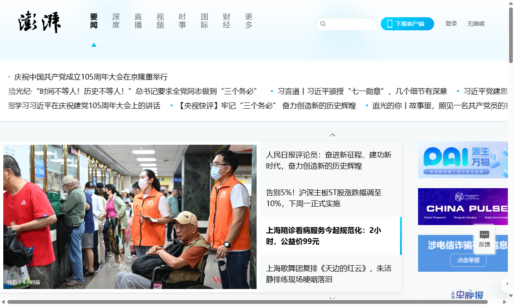
观察者网 / domestic-portal-guancha-home / pass
URL: https://www.guancha.cn/
类别: domestic_portal_homepage / domestic / public_no_login
主内容信号: 要闻标题、栏目卡片、新闻列表
导图节点: 观察者网 / 如果不直接切断乌克兰的无人机制造能力 / 回望十五年前的那场辩论：两种知识体系的碰撞 张维为 国家高端智库理 / 核心要点 / 人物与机构 / 解决台湾问题
质量指标: grounded=1, topNode=1, noise=0, duplicate=0, overlong=0
反跳: located，markerVisible=true，reason=none

央视网新闻 / domestic-portal-cctv-home / pass
URL: https://news.cctv.com/
类别: domestic_portal_homepage / domestic / public_no_login
主内容信号: 头条新闻、新闻列表、频道内容
导图节点: article_meta / 受权发布丨中共中央关于表彰全国优秀共产党员、全国优秀党务工作者和全 / 人物与机构 / 核心要点 / 背景原因 / 核心事件
质量指标: grounded=1, topNode=1, noise=0, duplicate=0, overlong=0
反跳: located，markerVisible=true，reason=none


中国新闻网 / domestic-portal-chinanews-home / pass
URL: https://www.chinanews.com.cn/
类别: domestic_portal_homepage / domestic / public_no_login
主内容信号: 新闻标题、频道内容、专题入口
导图节点: 核心要点 / 核心事件 / 为啥飞机不让带超100mL的液体登机？背后竟有这样一个故事 这些不 / 编撰虚假信息、恶意 薅 流量 关注新型网络犯罪 铸牢中华民族共同体 / 21 25 跨越百年沧桑 在人类经济史上刻下中国坐标 21 24 / 这个城市有点潮 开封：走入 上河 画卷
质量指标: grounded=1, topNode=1, noise=0, duplicate=0, overlong=0
反跳: located，markerVisible=true，reason=none

新华网 / domestic-portal-xinhua-home / pass
URL: https://www.news.cn/
类别: domestic_portal_homepage / domestic / public_no_login
主内容信号: 头条、新闻列表、栏目内容
导图节点: article_title / 其他要点 / 人物与机构 / 影响与结果 / 视频与内容 / 核心要点
质量指标: grounded=1, topNode=1, noise=0, duplicate=0, overlong=0
反跳: located，markerVisible=true，reason=none
人民网 / domestic-portal-people-home / pass
URL: http://www.people.com.cn/
类别: domestic_portal_homepage / domestic / public_no_login
主内容信号: 要闻、新闻列表、频道内容
导图节点: UP主与发布 / 其他要点 / 四连胜且零失球 墨西哥队晋级16强姆巴佩双响创纪录 法国胜瑞典 拾 / 国际能源署最新发布的 全球电动汽车展望2026 / 记者了解到，今年7月1日至10月8日，黑龙江省将依托夏季避暑旅游 / 制造业是立国之本、强国之基
质量指标: grounded=1, topNode=1, noise=0, duplicate=0, overlong=0
反跳: located，markerVisible=true，reason=none

腾讯新闻 / domestic-portal-qq-news-home / pass
URL: https://news.qq.com/
类别: domestic_portal_homepage / domestic / public_no_login
主内容信号: 新闻标题、推荐新闻、频道列表
导图节点: article_title / article_body / 中国新闻周刊 27分钟前 热点精选 专题英格兰vs民主刚果： 凯恩 / 专题夜读 导演李少红女儿： 从小被问 何时超过你妈 / 人物与机构 / 精选视频 白俄罗斯总统卢卡申科出席北大毕业典礼
质量指标: grounded=1, topNode=1, noise=0, duplicate=0, overlong=0
反跳: located，markerVisible=true，reason=none
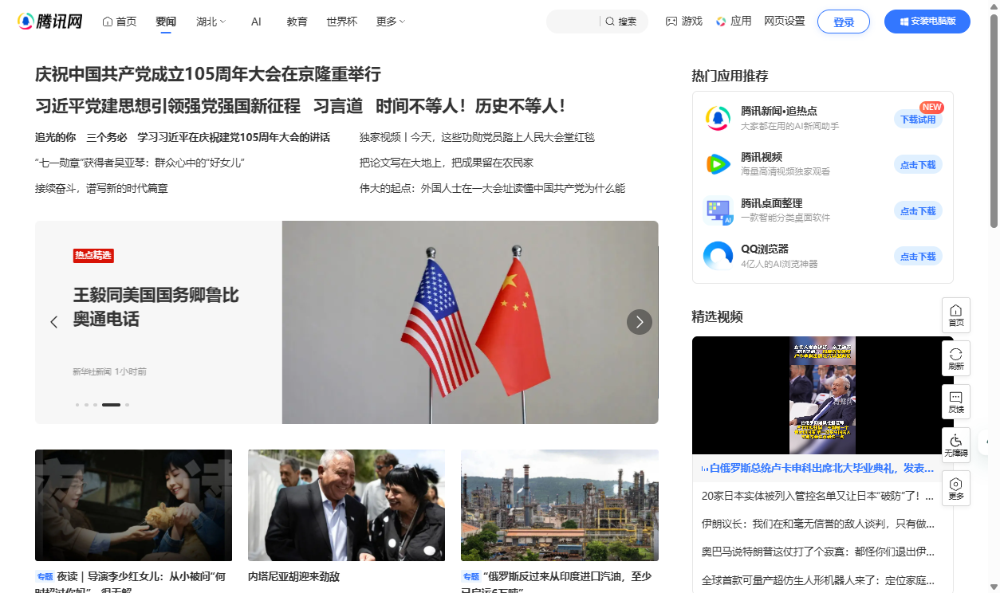
网易新闻 / domestic-portal-163-news-home / pass
URL: https://news.163.com/
类别: domestic_portal_homepage / domestic / public_no_login
主内容信号: 新闻标题、新闻列表、频道内容
导图节点: 核心要点 / 核心事件 / 谈心社 段奕宏 / 西祠胡同停摆5年重启首日发帖为0 老版主 会上去看看 / 前往日本周边海域的中国军舰 在日本防卫省网站 刷屏 哈梅内伊6天国 / 六旬父亲背8个土鸡蛋接考后续： 儿子报考大学已确定 新闻 28分钟
质量指标: grounded=1, topNode=1, noise=0, duplicate=0, overlong=0
反跳: located，markerVisible=true，reason=none

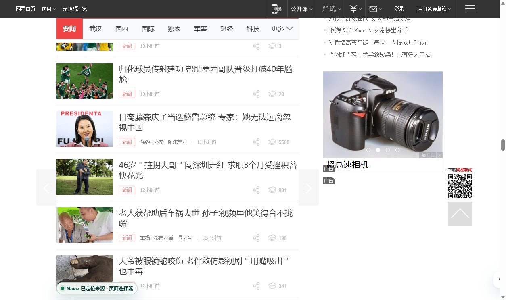
新华网 / domestic-article-xinhua-tech / pass
URL: https://www.news.cn/tech/
类别: domestic_article_detail / domestic / public_no_login
主内容信号: 科技新闻标题、新闻摘要、正文入口
导图节点: 人物与机构 / 金融汽车食品人居生活信息化数字经济学术中国乡村振兴银龄溯源中国城市 / 视频与内容 / 学习进行时高层时政人事国际财经网评港澳台湾思客智库全球连线教育科技 / Copyright 2000 - 2026 / 全屋智能 2026中国家电及消费电子博览会 2025年中国家电及消
质量指标: grounded=1, topNode=1, noise=0, duplicate=0, overlong=0
反跳: located，markerVisible=true，reason=none
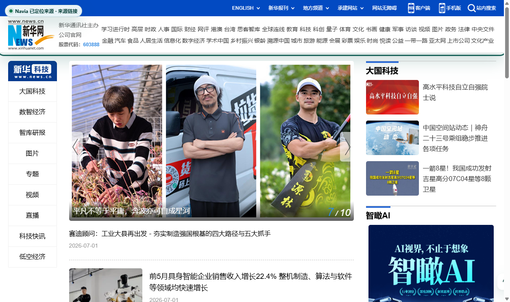
央视网新闻 / domestic-article-cctv-tech / pass
URL: https://news.cctv.com/tech/
类别: domestic_article_detail / domestic / public_no_login
主内容信号: 科技新闻、标题、摘要
导图节点: UP主与发布 / 核心要点 / 海阳核电二期全面进入安装调试阶段 记者今天从国家电投集团获悉 / 列表浏览 卡片浏览 记者探访海上 超级大冰箱 液化天然气船 今天 / 星河为幕，天宫作厨 神舟二十三号乘组解锁 太空出差 新体验 神舟二 / 记者探访海上 超级大冰箱 液化天然气船 今天 30日
质量指标: grounded=1, topNode=1, noise=0, duplicate=0, overlong=0
反跳: located，markerVisible=true，reason=none
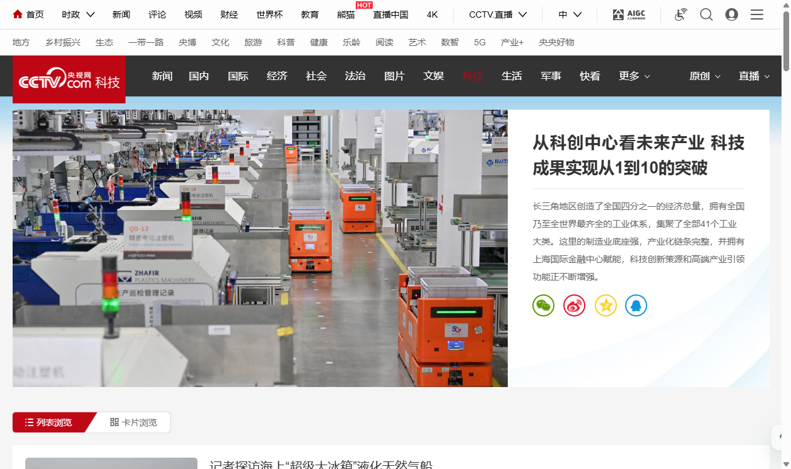

澎湃新闻 / domestic-article-thepaper-tech / pass
URL: https://www.thepaper.cn/channel_25950
类别: domestic_article_detail / domestic / public_no_login
主内容信号: 文章标题、摘要、栏目内容
导图节点: article_body / article_title / 核心要点 / 人物与机构 / 何谋保已任甘肃省政府党组成员 、 省政府办公厅党组书记 人事风向 / 努力在推进中国式现代化中充分发挥龙头带动和示范引领作用！上海市 两
质量指标: grounded=1, topNode=1, noise=0, duplicate=0, overlong=0
反跳: located，markerVisible=true，reason=none
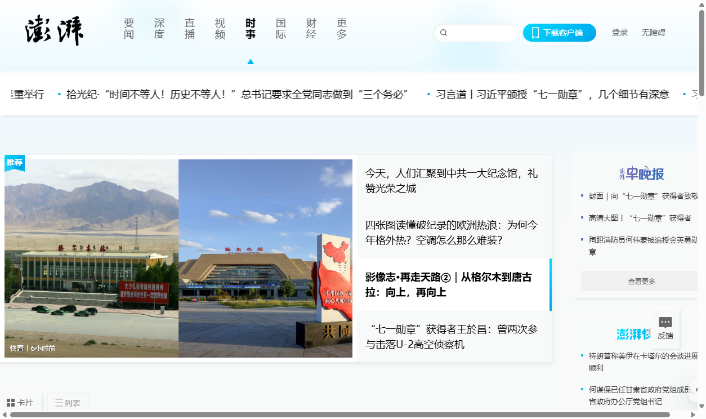
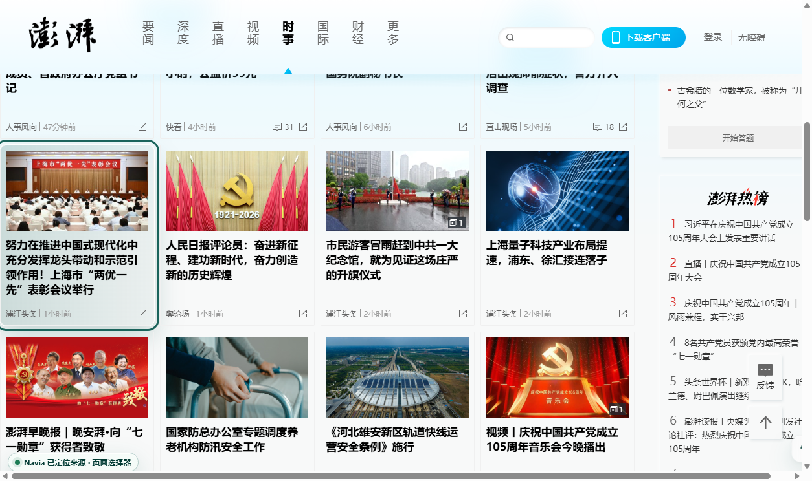
观察者网 / domestic-article-guancha-detail / pass
URL: https://www.guancha.cn/
类别: domestic_article_detail / domestic / public_no_login
主内容信号: 新闻标题、正文入口、栏目内容
导图节点: 观察者网 / 核心要点 / 一旅客辱骂殴打工作人员？广州东站通报 被洋品牌捧热 / 如果不直接切断乌克兰的无人机制造能力 / 回望十五年前的那场辩论：两种知识体系的碰撞 张维为 国家高端智库理 / 人物与机构
质量指标: grounded=1, topNode=1, noise=0, duplicate=0, overlong=0
反跳: located，markerVisible=true，reason=none
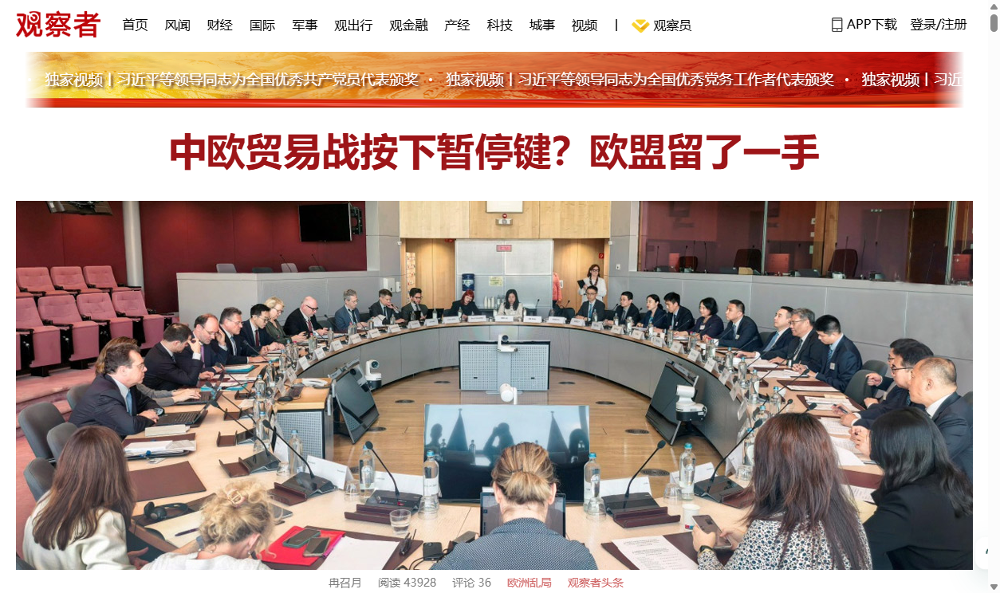
36氪 / domestic-article-36kr-news / pass
URL: https://36kr.com/information/technology/
类别: domestic_article_detail / domestic / public_no_login
主内容信号: 科技文章、标题、摘要
导图节点: article_title / article_body / 核心要点 / 核心事件 / 错误的定位叙事 / 深水财经社 3小时前 硬氪首发 全尺寸全重量国内率先首飞
质量指标: grounded=1, topNode=1, noise=0, duplicate=0, overlong=0
反跳: located，markerVisible=true，reason=none
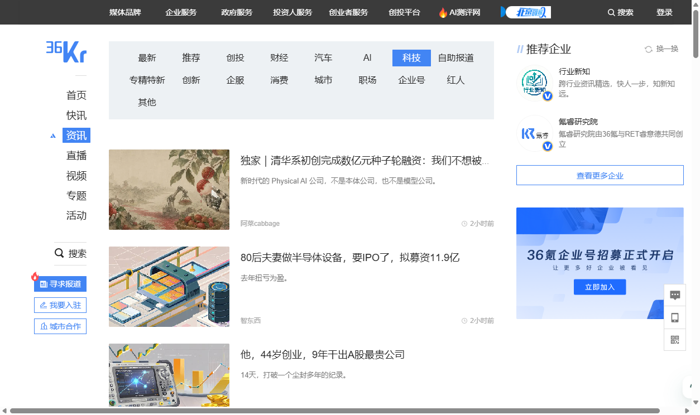
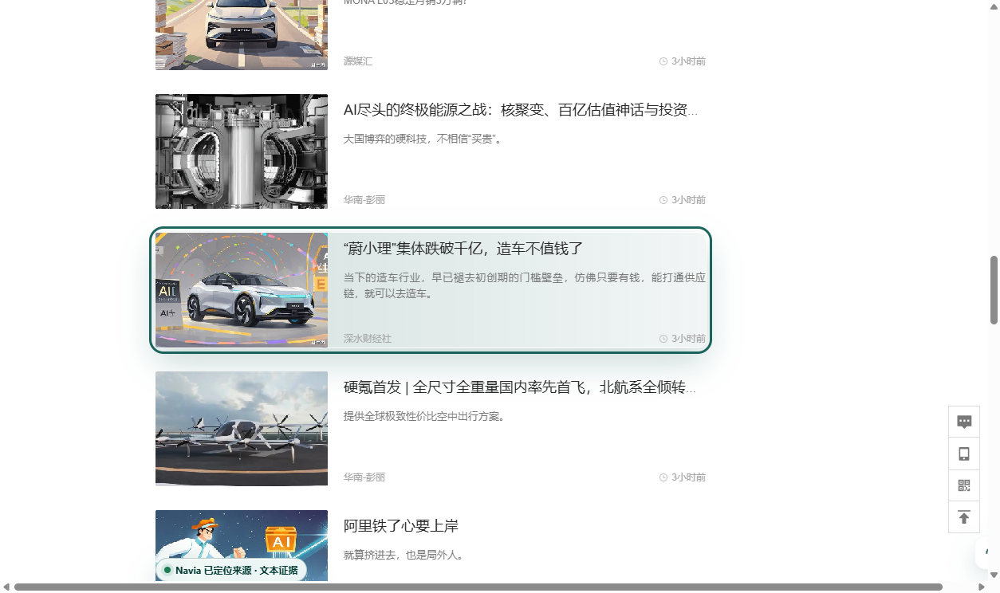
少数派 / domestic-article-sspai / pass
URL: https://sspai.com/
类别: domestic_article_detail / domestic / public_no_login
主内容信号: 文章标题、作者、摘要
导图节点: article_body / 快速投票：被 数据化 的睡眠，真的让你睡得更好了吗？ 53 / article_meta / 关注 南山居氪 少数派作者 心理咨询在读 / 核心要点 / 互动与传播
质量指标: grounded=1, topNode=1, noise=0, duplicate=0, overlong=0
反跳: located，markerVisible=true，reason=none
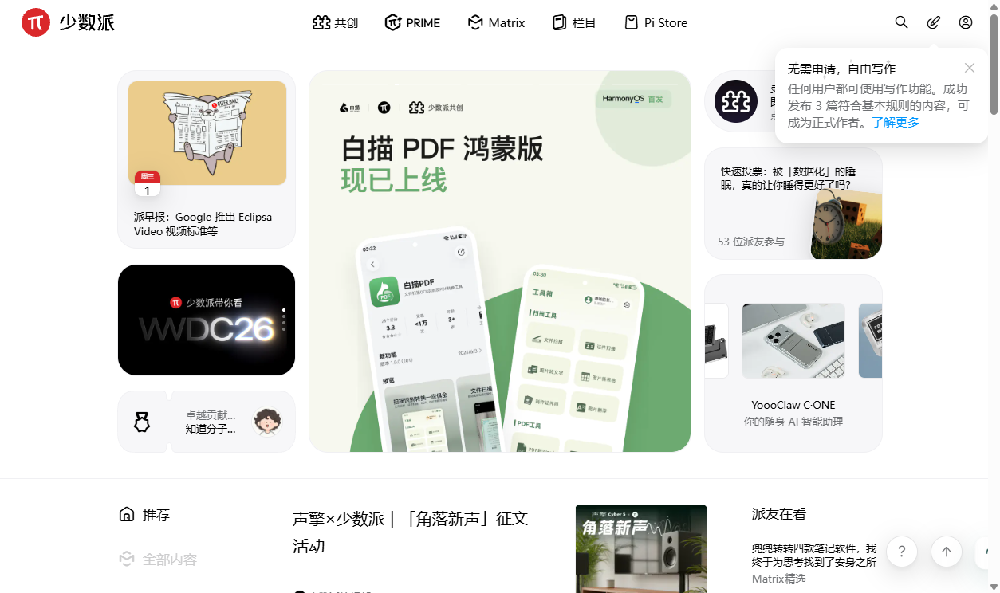
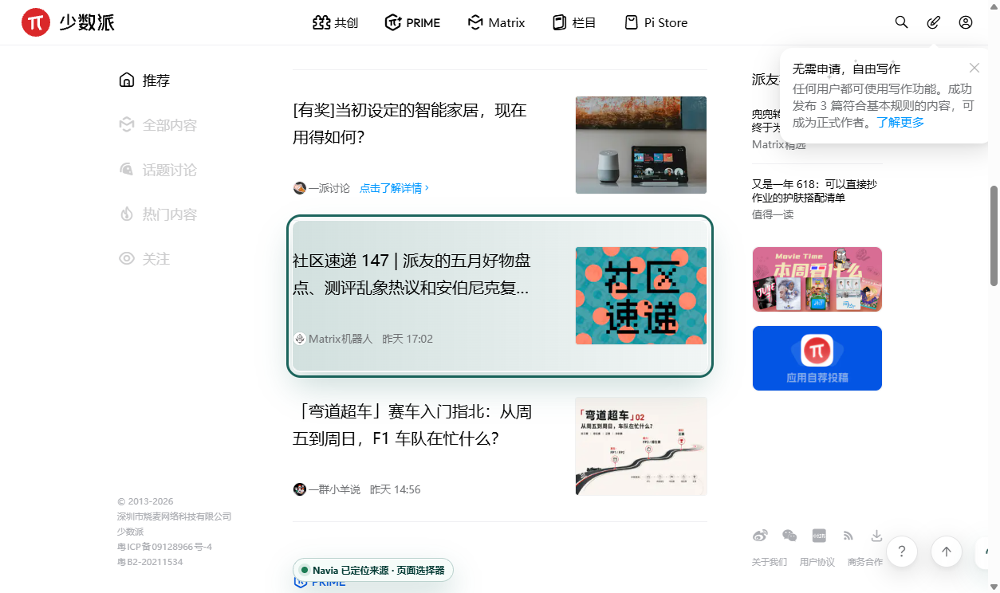
博客园 / domestic-article-cnblogs / pass
URL: https://www.cnblogs.com/
类别: domestic_article_detail / domestic / public_no_login
主内容信号: 文章标题、摘要、作者
导图节点: article_body / IT老彭 2026-07-01 23 25 0 0 4 AI / 视频与内容 / AI Agent 全日制30天速成 Day9 笔记 修订要点 / 核心要点 / 编辑推荐 在.NET 上构建超大托管数组 1/14/395
质量指标: grounded=1, topNode=1, noise=0, duplicate=0, overlong=0
反跳: located，markerVisible=true，reason=none
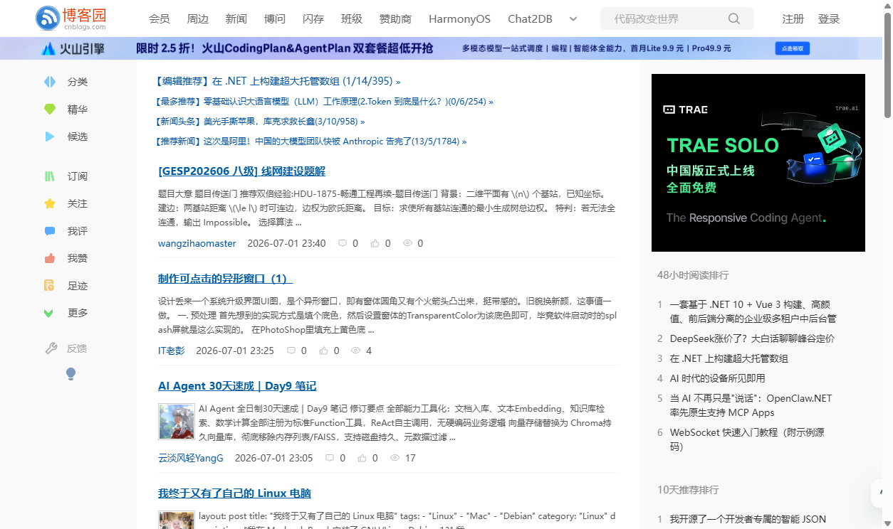
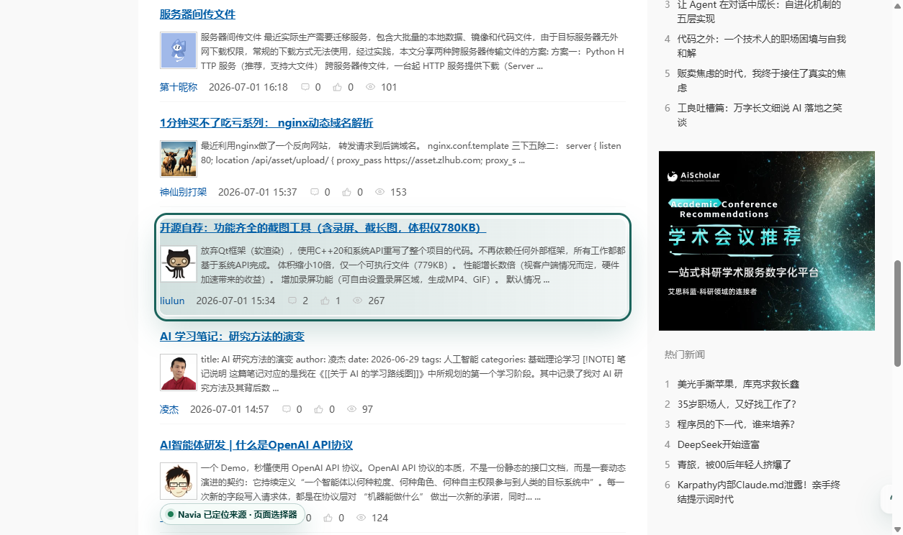
稀土掘金 / domestic-article-juejin / pass
URL: https://juejin.cn/
类别: domestic_article_detail / domestic / public_no_login
主内容信号: 技术文章、标题、摘要
导图节点: 核心要点 / 人物与机构 / 牛奶 1.6k 11 AIGC AI编程 OpenAI / 为什么AI 时代来临 / 先放个结论：按星哥的步骤配置完 / 影响与结果
质量指标: grounded=1, topNode=1, noise=0, duplicate=0, overlong=0
反跳: located，markerVisible=true，reason=none
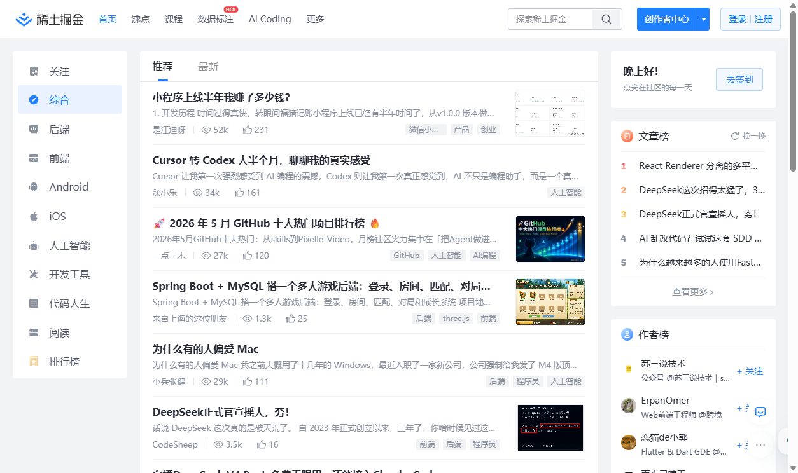
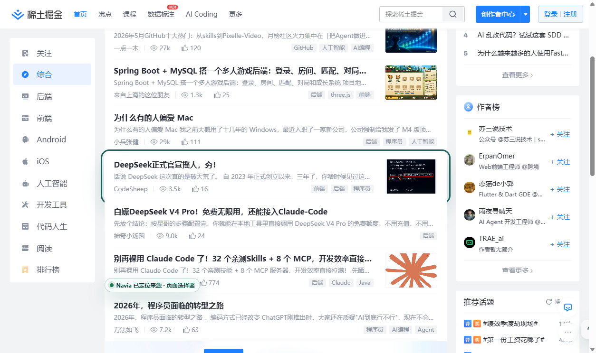
B站 / domestic-content-bilibili-home / pass
URL: https://www.bilibili.com/
类别: domestic_content_platform / domestic / temp_cookie_profile
主内容信号: 视频卡片、标题、UP主
导图节点: 核心要点 / bili_feed_card / 哔哩哔哩 bilibili.com / 不快乐就来看快乐女孩小卖部上班的快乐 不快乐就来看快乐女孩小卖部上 / 马德拉岛的超级天才如何成长为足坛巨星 / 不快乐就来看快乐女孩小卖部上班的快乐
质量指标: grounded=1, topNode=1, noise=0, duplicate=0, overlong=0
反跳: located，markerVisible=true，reason=none
B站 / domestic-content-bilibili-video / pass
URL: https://www.bilibili.com/video/BV18W7t6GEmc/
类别: domestic_content_platform / domestic / temp_cookie_profile
主内容信号: 视频标题、简介、UP主、互动数据
导图节点: 视频与内容 / 当前 B站视频详情页 / og url / 其他要点 / bili_video_title / 瓜物志第121期_哔哩哔哩_bilibili
质量指标: grounded=1, topNode=1, noise=0, duplicate=0, overlong=0
反跳: located，markerVisible=true，reason=none
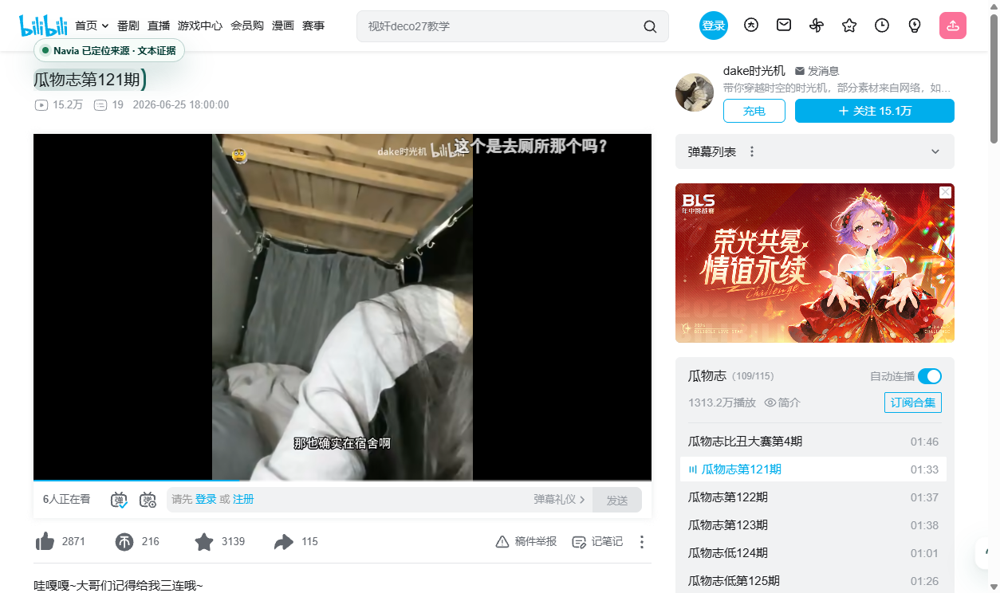
小红书 / domestic-content-xhs-home / pass
URL: https://www.xiaohongshu.com/explore
类别: domestic_content_platform / domestic / temp_cookie_profile
主内容信号: 笔记卡片、标题、作者
导图节点: 核心要点 / Superpowers不再是最佳实践：2026下半年你 / 德荷出局全给 C罗铺路？梅西赛程简直躺赢！ / codex的6个最强skill你装了吗？ / 在武汉夏天可以做的100件事哈哈哈 / 幺幺：爸爸，你真的是好烦挺哦！
质量指标: grounded=1, topNode=1, noise=0, duplicate=0, overlong=0
反跳: located，markerVisible=true，reason=none
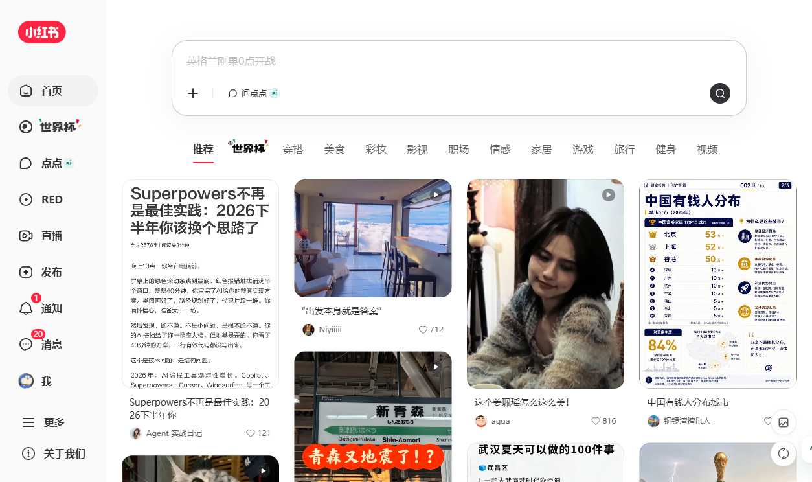
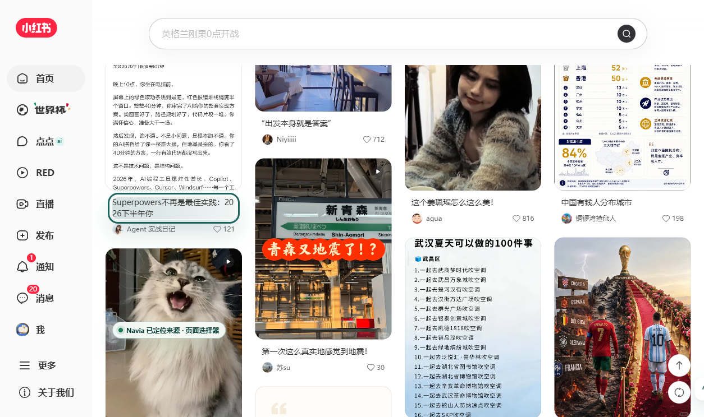
小红书 / domestic-content-xhs-note / blocked
URL: https://www.xiaohongshu.com/explore/6a3283ce000000001602715a
类别: domestic_content_platform / domestic / temp_cookie_profile
主内容信号: 笔记标题、正文、图片说明、作者
导图节点: viewport width device-width,initial-scale 1,minimum-scale 1,max / format-detection telephone no,address no,email no / shenma-site-verification 3abbfaac4345ca4daaa5ad2282115298_14767 / 360-site-verification 86dcc68a445e2ed8034e85f0ba88a83a / google-site-verification -wdhMjIAPXapbEjwFVejIM-GCtl1fc9nUdOA32 / og image //picasso-static.xiaohongshu.com/fe-platform/e6214e4fb
质量指标: grounded=1, topNode=1, noise=0, duplicate=0, overlong=1
反跳: fallback_shown，markerVisible=false，reason=theme-color rgb 255, 255, 255fallback_shownviewport: width=device-width,initial-scale=1,minimum-scale=1,maximum-scale=1,user-scalable=no,viewport-fit=cover未能定位到原文位置，已显示来源证据。原因：source_not_found_in_dom

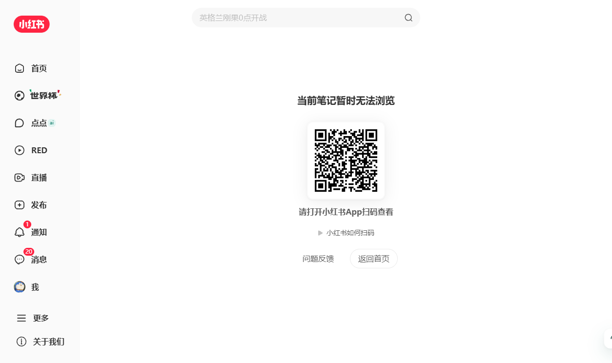
知乎 / domestic-content-zhihu-home / pass
URL: https://www.zhihu.com/explore
类别: domestic_content_platform / domestic / public_no_login
主内容信号: 问题标题、回答摘要、话题
导图节点: 核心要点 / 影响与结果 / 端午习俗 小时候过端午 / 8 个回答 特立独行 小黄人 两部新片加入暑期档厮杀 / 互动与传播 / 2026 季中冠军赛落户韩国大田
质量指标: grounded=1, topNode=1, noise=0, duplicate=0, overlong=0
反跳: located，markerVisible=true，reason=none
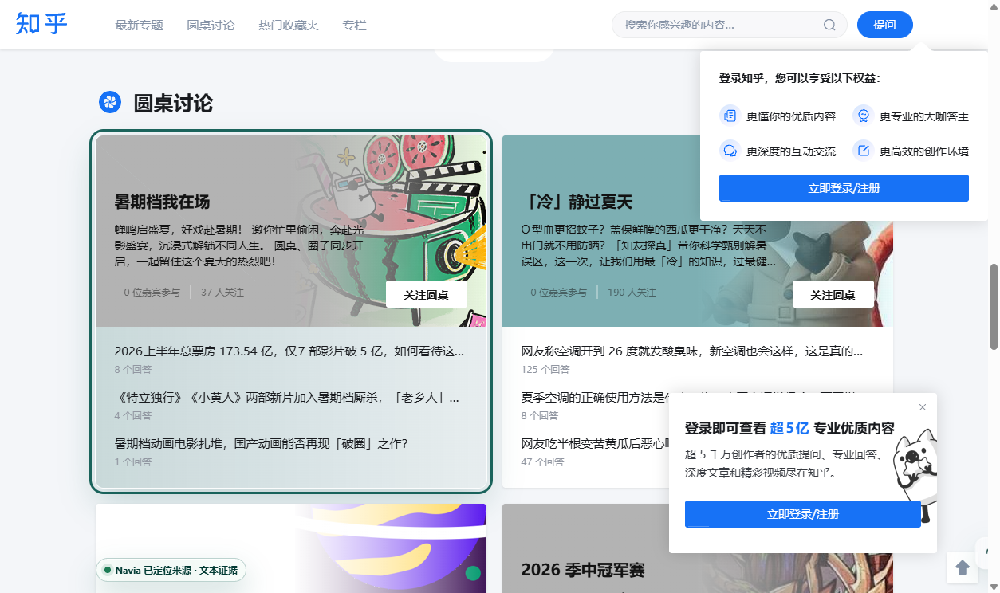
豆瓣 / domestic-content-douban-home / pass
URL: https://www.douban.com/
类别: domestic_content_platform / domestic / public_no_login
主内容信号: 内容入口、标题、话题
导图节点: article_title / 0人关注 五棵松 致敬Beyond 真的爱你 / 豆品 全部商品 豆瓣经典 家居生活 外出旅行 文具小物 / 原创数字作品 更多 / 豆瓣新碟榜 更多 / 当前页面
质量指标: grounded=1, topNode=1, noise=0, duplicate=0, overlong=0
反跳: located，markerVisible=true，reason=none
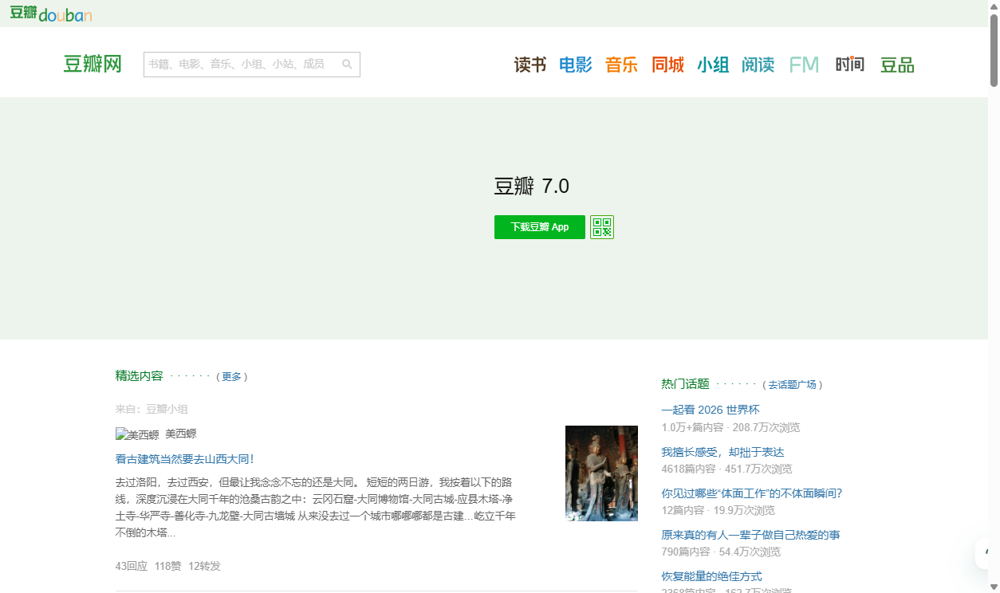
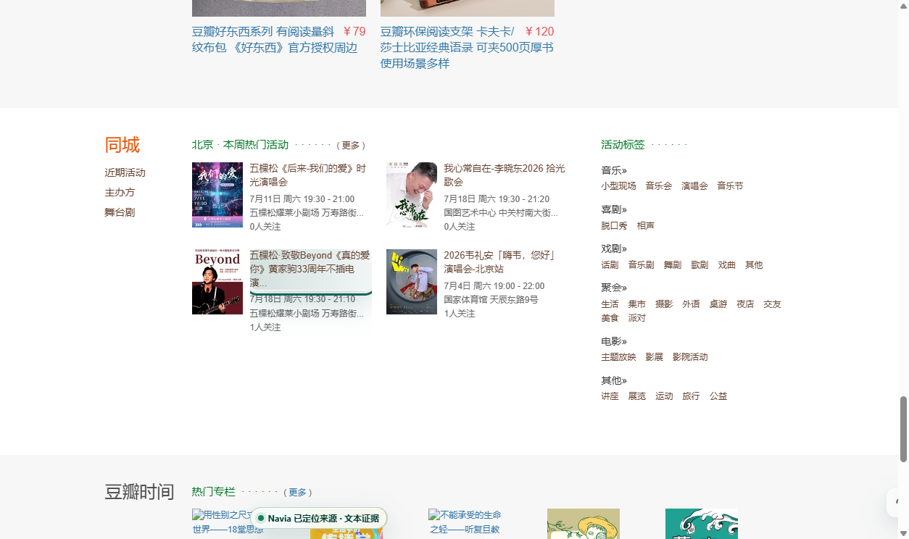
微博热搜 / domestic-content-weibo-hot / pass
URL: https://s.weibo.com/top/summary
类别: domestic_content_platform / domestic / public_no_login
主内容信号: 热搜标题、热度、话题列表
导图节点: 内容简介 / 核心要点 / 生成式人工智能技术仍在快速发展的阶段 / 您在使用本服务时 / 在您使用本服务过程中 / 您使用本服务生成的内容
质量指标: grounded=1, topNode=1, noise=0, duplicate=0, overlong=0
反跳: located，markerVisible=true，reason=none
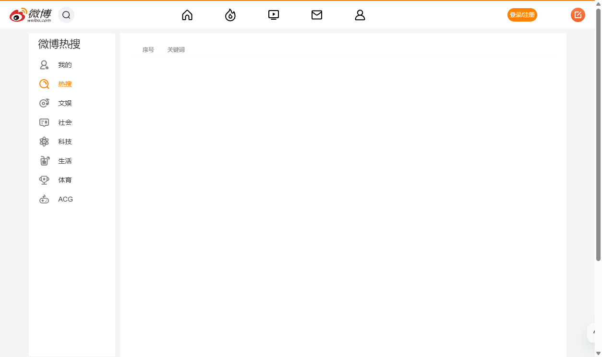
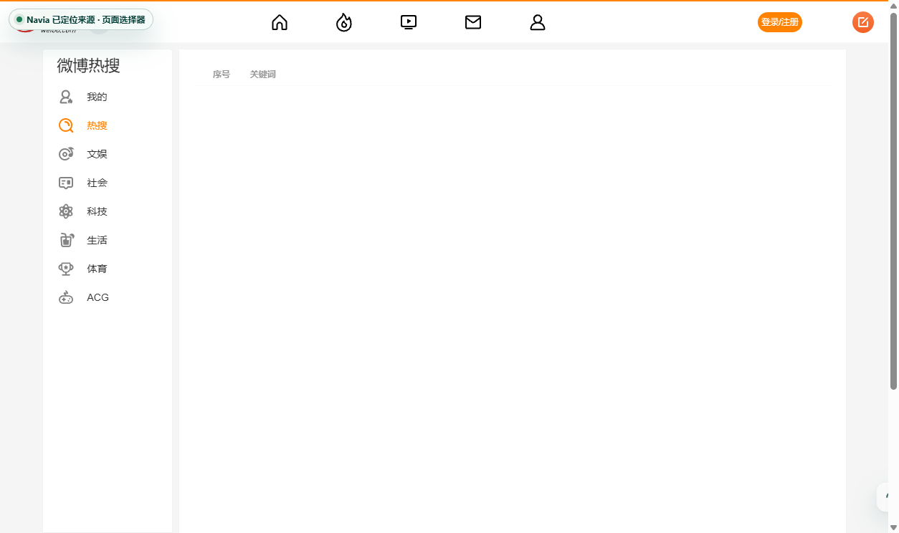
百家号 / domestic-content-baijiahao / pass
URL: https://baijiahao.baidu.com/
类别: domestic_content_platform / domestic / public_no_login
主内容信号: 文章标题、摘要、作者
导图节点: 核心要点 / 内容简介 / 百度内容创作经营平台 照见灵感 / Dresslena 音乐领域 / 科幻Fans 影视领域 / 郑博隆医生 健康领域 2024年百家榜年度影响力作者
质量指标: grounded=1, topNode=1, noise=0, duplicate=0, overlong=0
反跳: located，markerVisible=true，reason=none
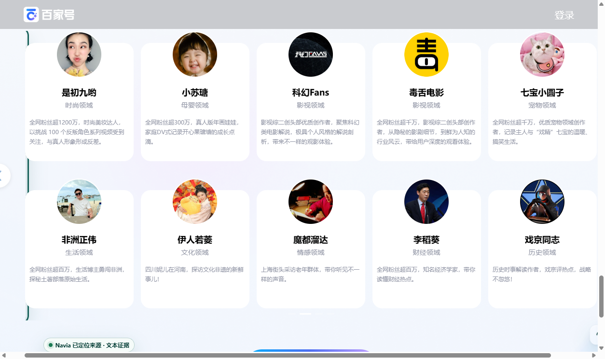
BBC News / international-portal-bbc-home / pass
URL: https://www.bbc.com/news
类别: international_portal_homepage / international / public_no_login
主内容信号: headline、story list、section news
导图节点: 核心要点 / 1 hr ago Europe Anthropic says / MOST READ 1 Canada celebrates / US Supreme Court upholds / 22 hrs ago World MOST WATCHED 1 / ALSO IN NEWS US Supreme Court
质量指标: grounded=1, topNode=1, noise=0, duplicate=0, overlong=0
反跳: located，markerVisible=true，reason=none
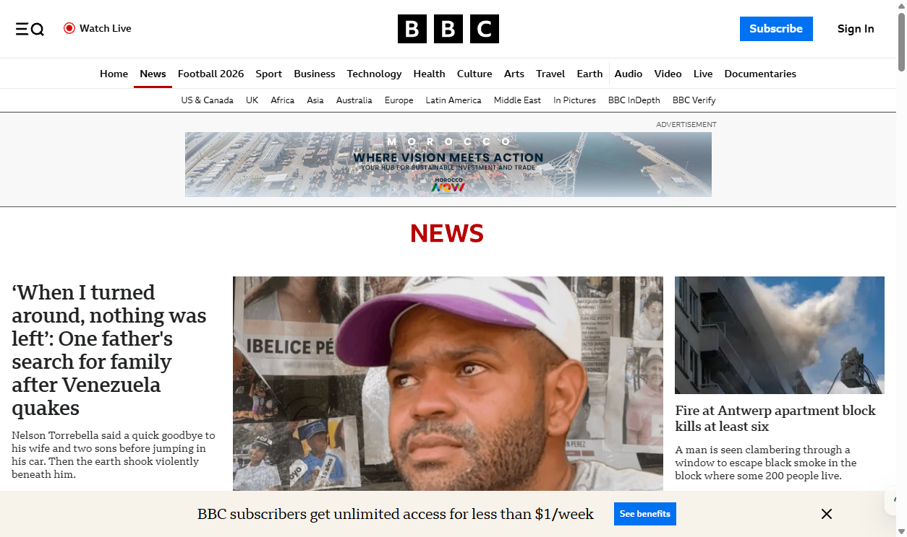
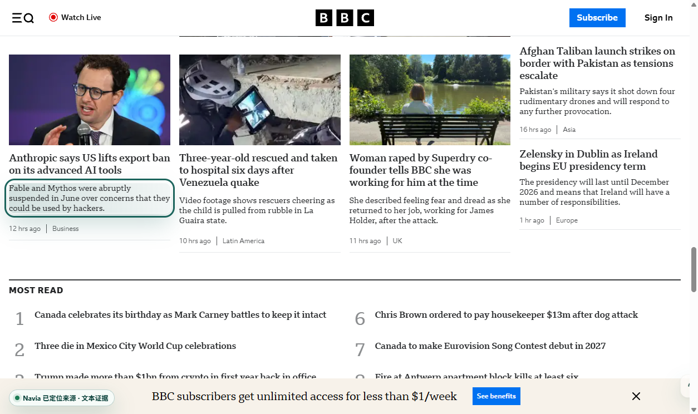
Reuters / international-portal-reuters-home / degraded
URL: https://www.reuters.com/
类别: international_portal_homepage / international / public_no_login
主内容信号: headline、top stories、article cards
导图节点: viewport width device-width, initial-scale 1.0 / var dd rt c, cid AHrlqAAAAAMAvgb7rMmYuV8AXbNhKA, hsh / reuters.com
质量指标: grounded=1, topNode=1, noise=0, duplicate=0, overlong=0.667
反跳: fallback_shown，markerVisible=false，reason=reuters.comfallback_shownviewport: width=device-width, initial-scale=1.0未能定位到原文位置，已显示来源证据。原因：source_not_found_in_dom
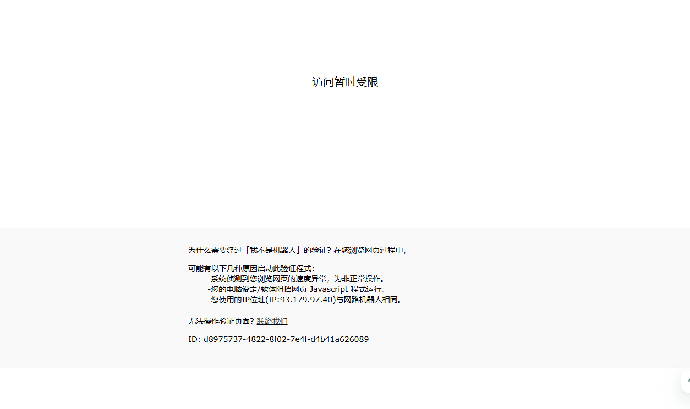
AP News / international-portal-ap-home / pass
URL: https://apnews.com/
类别: international_portal_homepage / international / public_no_login
主内容信号: headline、top stories、article cards
导图节点: article_meta / 核心要点 / wearing flower lei during Selma / Nissan Leaf, Edmunds 30,000 EV / Health TOP STORIES Democrats in / World Iran war Russia-Ukraine
质量指标: grounded=1, topNode=1, noise=0, duplicate=0, overlong=0
反跳: located，markerVisible=true，reason=none
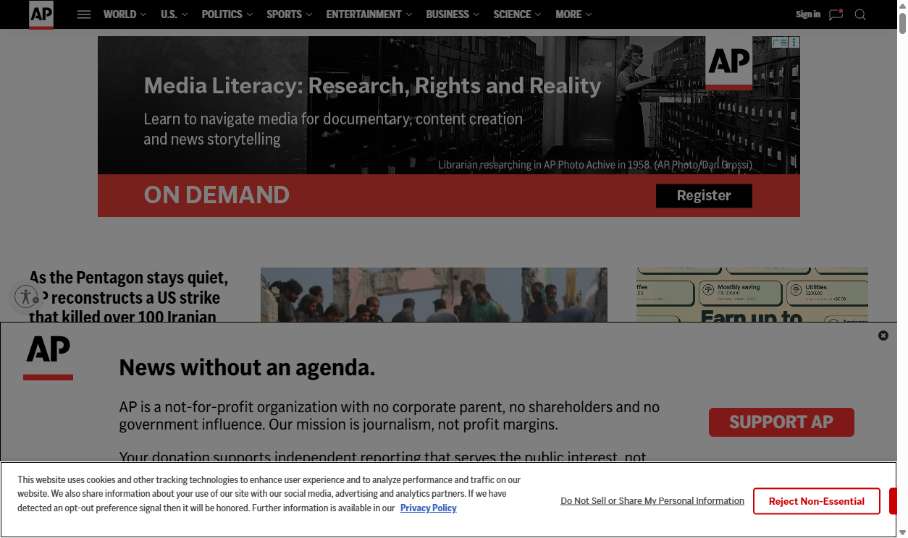
The Guardian / international-portal-guardian-home / pass
URL: https://www.theguardian.com/international
类别: international_portal_homepage / international / public_no_login
主内容信号: headline、story list、section news
导图节点: 核心要点 / features America at 250 I wish / Interview Fabián Ruiz It s not / World Cup 2026 Interview Fabián / Deeply read What readers are / IranFederation hits out at lies
质量指标: grounded=1, topNode=1, noise=0, duplicate=0, overlong=0
反跳: located，markerVisible=true，reason=none
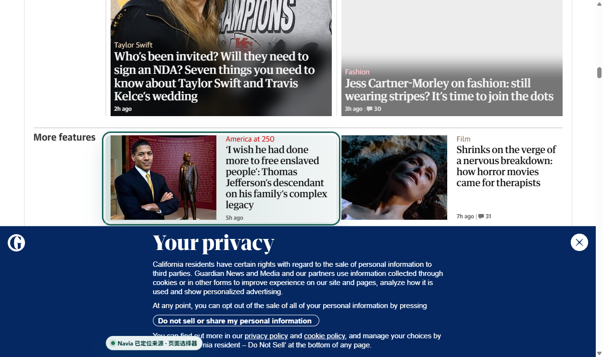
CNN / international-portal-cnn-home / pass
URL: https://edition.cnn.com/world
类别: international_portal_homepage / international / public_no_login
主内容信号: headline、world news、article cards
导图节点: article_title / article_meta / 核心要点 / Live Updates Amirhosein / That could be problem for Trump / Now she s one step closer to
质量指标: grounded=1, topNode=1, noise=0, duplicate=0, overlong=0
反跳: located，markerVisible=true，reason=none
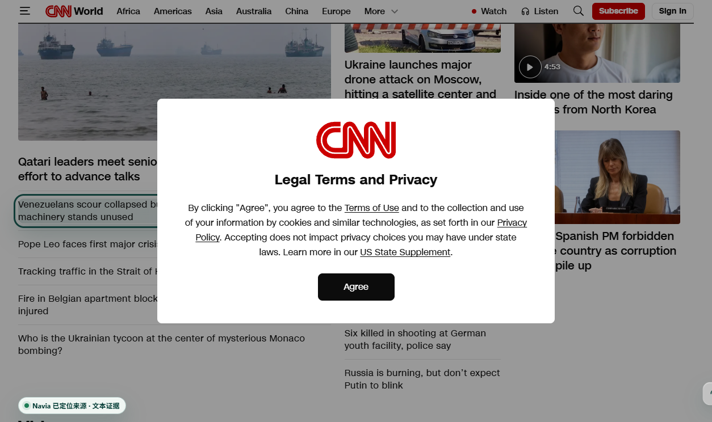
NPR / international-portal-npr-home / pass
URL: https://www.npr.org/sections/news/
类别: international_portal_homepage / international / public_no_login
主内容信号: headline、story list、summary
导图节点: article_body / 限制与风险 / Opponents worry about potential / article_meta / 核心要点 / Chaudary/AP ASIA Funerals held
质量指标: grounded=1, topNode=1, noise=0, duplicate=0, overlong=0
反跳: located，markerVisible=true，reason=none
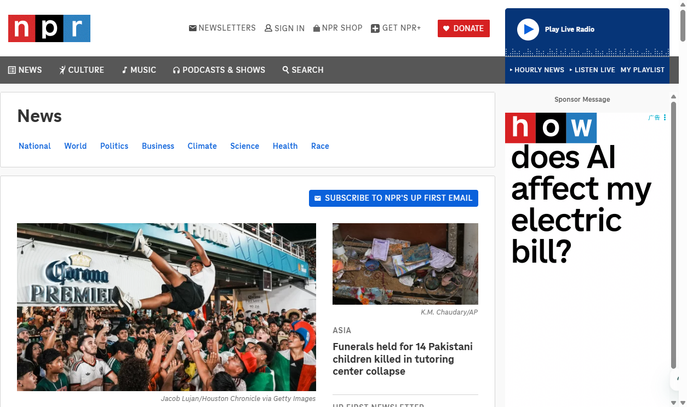
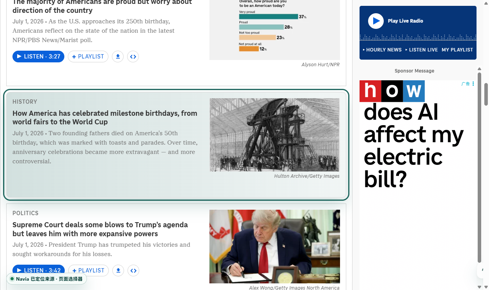
Al Jazeera / international-portal-aljazeera-home / pass
URL: https://www.aljazeera.com/
类别: international_portal_homepage / international / public_no_login
主内容信号: headline、top stories、article cards
导图节点: article_meta / article_body / 核心要点 / After Afghanistan fires drones / Opinion by Leonid Ragozin Leonid / Take me to America Underdogs
质量指标: grounded=1, topNode=1, noise=0, duplicate=0, overlong=0
反跳: located，markerVisible=true，reason=none
Yahoo News / international-portal-yahoo-home / pass
URL: https://news.yahoo.com/
类别: international_portal_homepage / international / public_no_login
主内容信号: headline、story list、article cards
导图节点: article_body / Michael Bennet loses Colorado / 核心要点 / NewsToday s / 4of 8Democratic socialist Melat / Democratic socialist Melat Kiros
质量指标: grounded=1, topNode=1, noise=0, duplicate=0, overlong=0
反跳: located，markerVisible=true，reason=none
BBC News / international-article-bbc-tech / pass
URL: https://www.bbc.com/news/technology
类别: international_article_detail / international / public_no_login
主内容信号: technology headline、story summary、article list
导图节点: article_meta / article_title / LISTEN Interface Is tech ruining / 核心要点 / 流程与操作 / BBC reporter tests AI
质量指标: grounded=1, topNode=1, noise=0, duplicate=0, overlong=0
反跳: located，markerVisible=true，reason=none
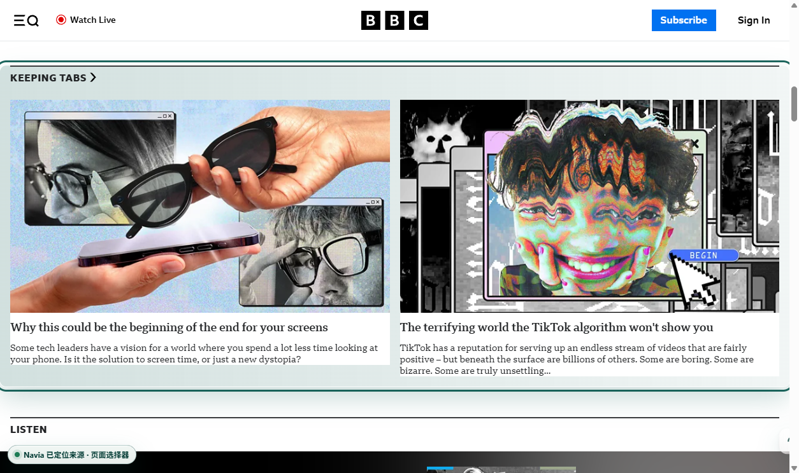
Reuters / international-article-reuters-world / degraded
URL: https://www.reuters.com/world/
类别: international_article_detail / international / public_no_login
主内容信号: world headline、story summary、article list
导图节点: viewport width device-width, initial-scale 1.0 / var dd rt c, cid AHrlqAAAAAMAvgb7rMmYuV8AXbNhKA, hsh / reuters.com
质量指标: grounded=1, topNode=1, noise=0, duplicate=0, overlong=0.667
反跳: fallback_shown，markerVisible=false，reason=var dd rt c, cid AHrlqAAAAAMAvgb7rMmYuV8AXbNhKA, hshfallback_shownviewport: width=device-width, initial-scale=1.0未能定位到原文位置，已显示来源证据。原因：source_not_found_in_dom
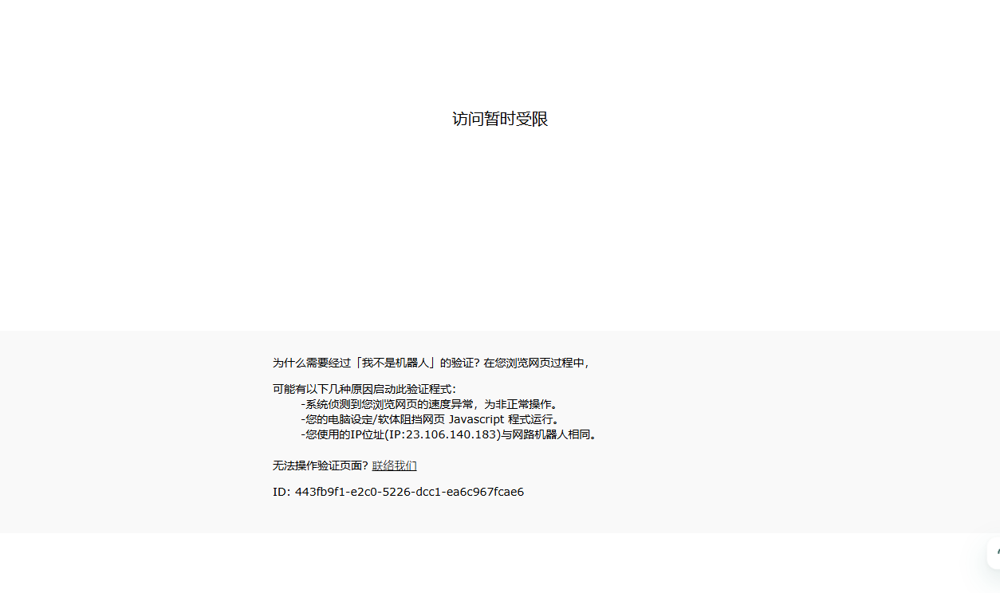
AP News / international-article-ap-world / pass
URL: https://apnews.com/world-news
类别: international_article_detail / international / public_no_login
主内容信号: world news headline、story list、summary
导图节点: article_meta / 核心要点 / 流程与操作 / Health TOP STORIES Democrats in / World Iran war Russia-Ukraine / Oddities TOP STORIES Viral
质量指标: grounded=1, topNode=1, noise=0, duplicate=0, overlong=0
反跳: located，markerVisible=true，reason=none
The Guardian / international-article-guardian-world / pass
URL: https://www.theguardian.com/world
类别: international_article_detail / international / public_no_login
主内容信号: world headline、story list、summary
导图节点: article_meta / 核心要点 / Europe At least 3.3m people were / Americas Venezuelan police / South and Central Asia Pakistan / Asia Pacific China is clear
质量指标: grounded=1, topNode=1, noise=0, duplicate=0, overlong=0
反跳: located，markerVisible=true，reason=none
The Verge / international-article-theverge / pass
URL: https://www.theverge.com/tech
类别: international_article_detail / international / public_no_login
主内容信号: tech headline、article cards、summary
导图节点: article_body / MIA SATO 5 26 AM GMT+8 Kalta? / 核心要点 / Gemini Spark updates macOS / Motorola may be first, with Edge / JESS WEATHERBED 7 43 PM GMT+8
质量指标: grounded=1, topNode=1, noise=0, duplicate=0, overlong=0
反跳: located，markerVisible=true，reason=none
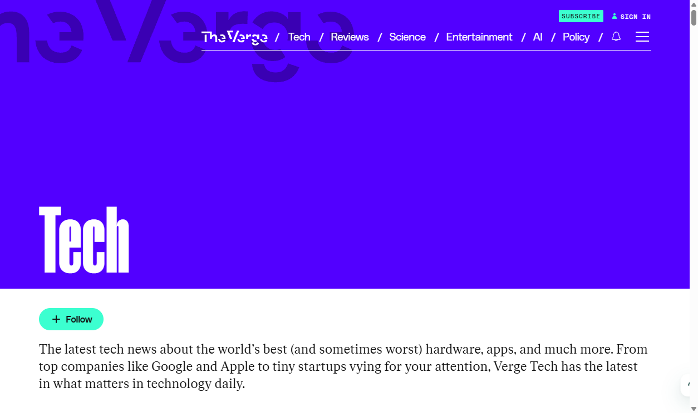
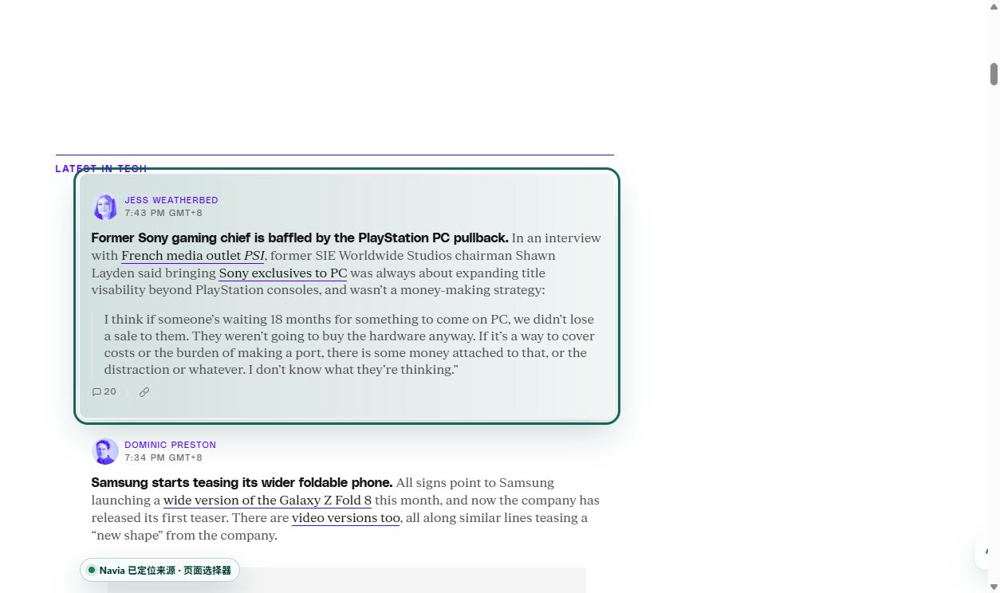
Wired / international-article-wired / pass
URL: https://www.wired.com/category/business/
类别: international_article_detail / international / public_no_login
主内容信号: article headline、summary、author
导图节点: article_body / 限制与风险 / MAXWELL ZEFF Former Google and / 核心要点 / ZEYI YANG TRANSPORTATION Welcome / 流程与操作
质量指标: grounded=1, topNode=1, noise=0, duplicate=0, overlong=0
反跳: located，markerVisible=true，reason=none
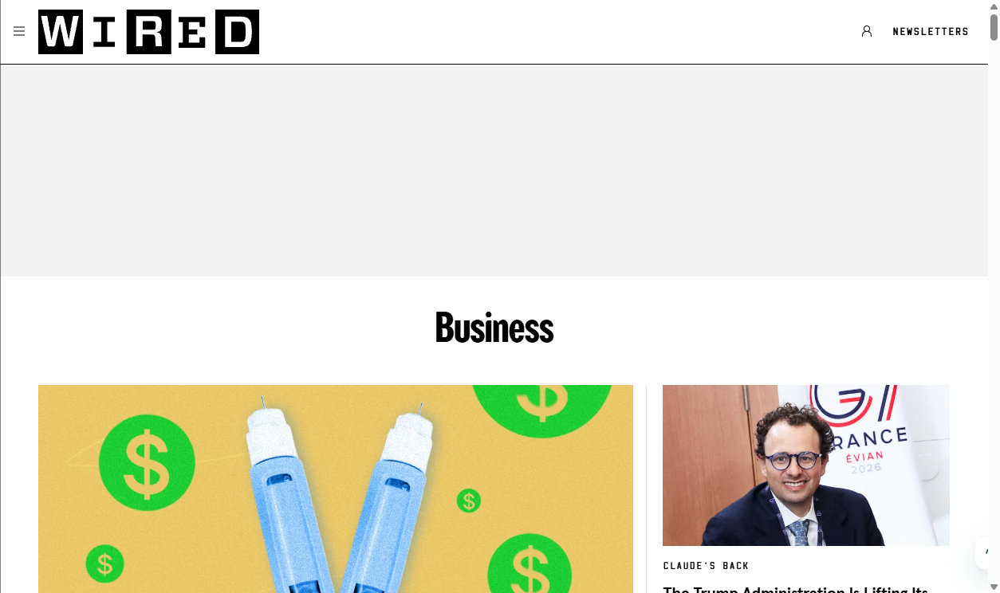
Ars Technica / international-article-arstechnica / pass
URL: https://arstechnica.com/
类别: international_article_detail / international / public_no_login
主内容信号: article headline、summary、section
导图节点: article_body / 核心要点 / Reddit will require you to log / DAN GOODIN 2026/6/30 48 South / JENNIFER OUELLETTE 2026/6/29 46 / Ars Technica homepage CLASSIC
质量指标: grounded=1, topNode=1, noise=0, duplicate=0, overlong=0
反跳: located，markerVisible=true，reason=none
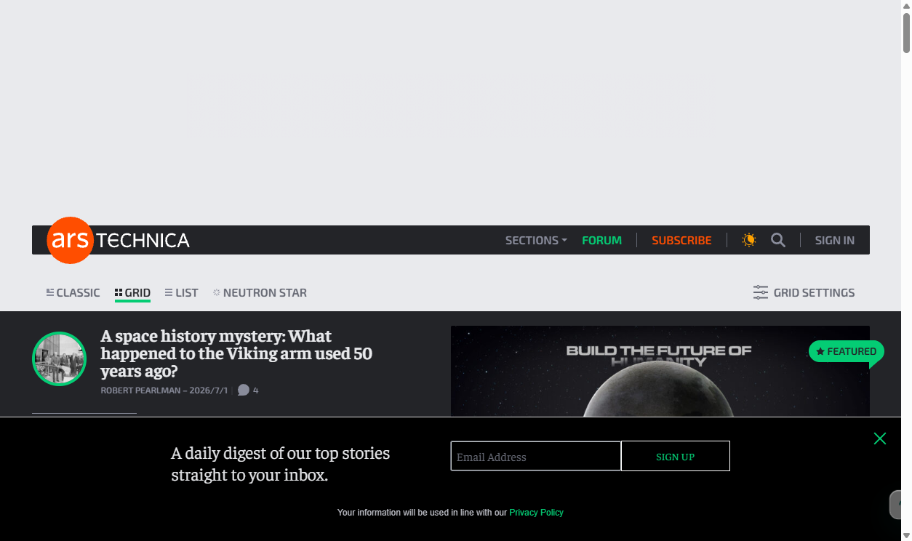
TechCrunch / international-article-techcrunch / pass
URL: https://techcrunch.com/
类别: international_article_detail / international / public_no_login
主内容信号: startup headline、summary、author
导图节点: article_title / 核心要点 / REGISTER NOW Most Popular / No sugarcoating. No hype. Just / AI Trump drops restrictions on / OpenAI just shared its plans to
质量指标: grounded=1, topNode=1, noise=0, duplicate=0, overlong=0
反跳: located，markerVisible=true，reason=none
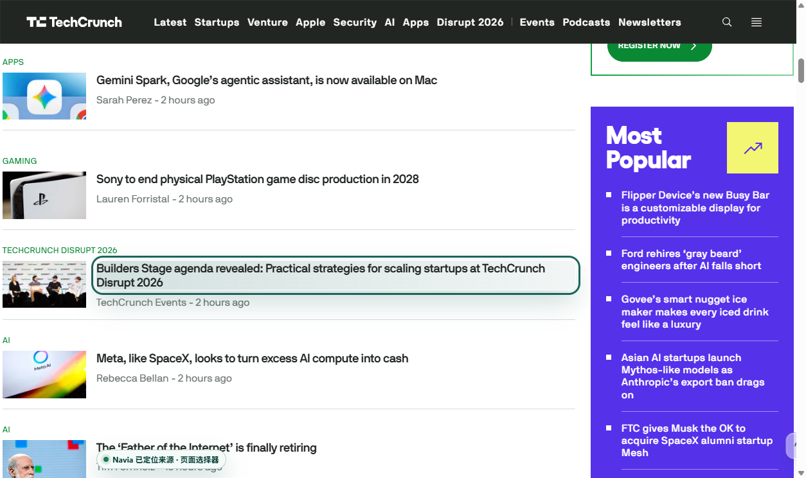
Wikipedia / international-doc-wikipedia-ai / pass
URL: https://en.wikipedia.org/wiki/Artificial_intelligence
类别: international_knowledge_blog_doc / international / public_no_login
主内容信号: definition、history、applications
导图节点: article_body / Artificial intelligence 177 / 核心要点 / Modern deep learning techniques / It is field of research in / These can be reduced with RLHF
质量指标: grounded=1, topNode=1, noise=0, duplicate=0, overlong=0
反跳: located，markerVisible=true，reason=none
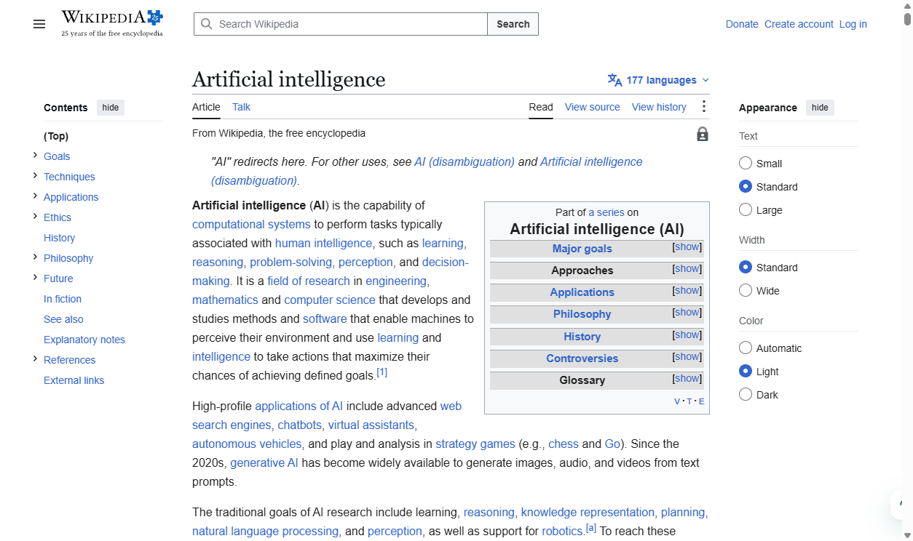
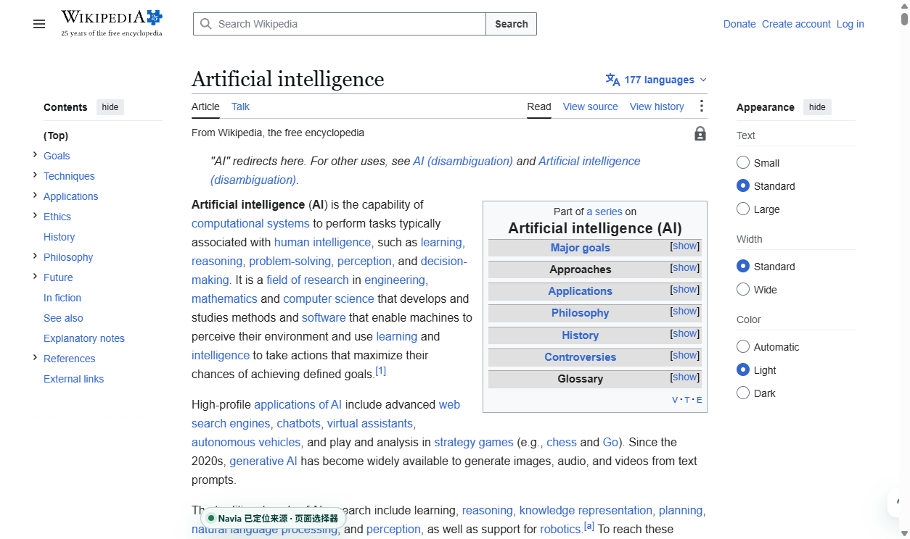
MDN / international-doc-mdn-fetch / pass
URL: https://developer.mozilla.org/en-US/docs/Web/API/Fetch_API
类别: international_knowledge_blog_doc / international / public_no_login
主内容信号: definition、concept、usage
导图节点: article_meta / article_body / 核心要点 / 流程与操作 / 其他要点 / 架构与接口
质量指标: grounded=1, topNode=1, noise=0, duplicate=0, overlong=0
反跳: located，markerVisible=true，reason=none
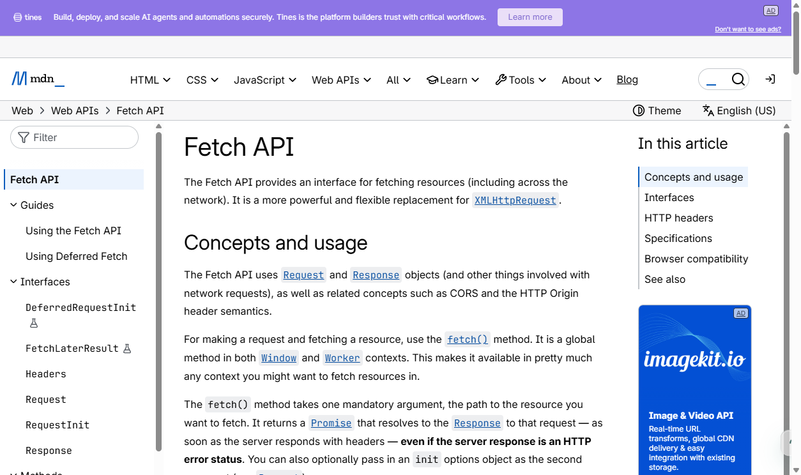
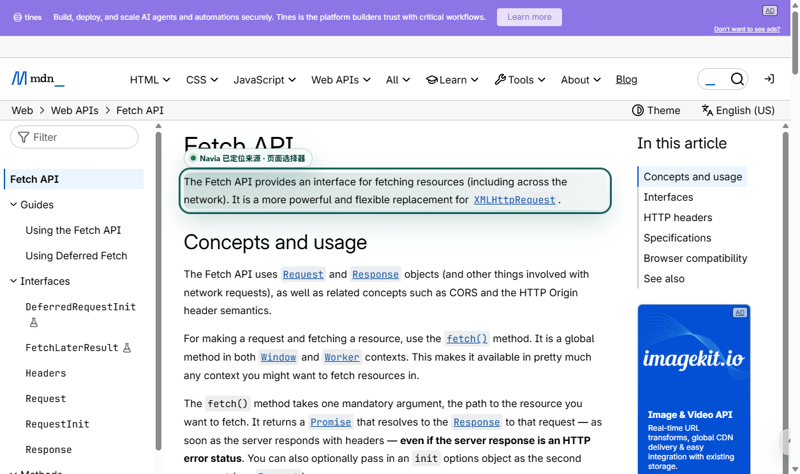
Python Docs / international-doc-python-tutorial / pass
URL: https://docs.python.org/3/tutorial/
类别: international_knowledge_blog_doc / international / public_no_login
主内容信号: tutorial、concept、examples
导图节点: article_meta / 核心要点 / It has efficient high-level data / Examples, recipes, and other / Python Tutorial Tip This / Python interpreter is easily
质量指标: grounded=1, topNode=1, noise=0, duplicate=0, overlong=0
反跳: located，markerVisible=true，reason=none
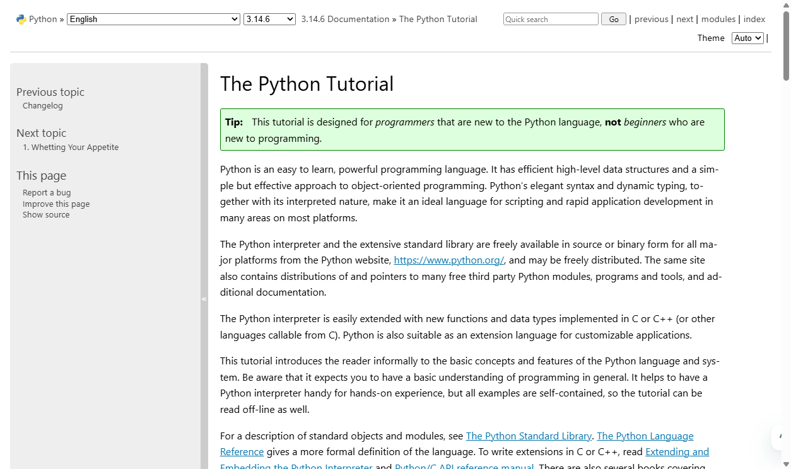

React Docs / international-doc-react-learn / pass
URL: https://react.dev/learn
类别: international_knowledge_blog_doc / international / public_no_login
主内容信号: learning path、concept、examples
导图节点: 核心要点 / Click each button separately / Have look at result App.js / React uses your keys to know / magenta darkgreen product.title / You can also write your own
质量指标: grounded=1, topNode=1, noise=0, duplicate=0, overlong=0
反跳: located，markerVisible=true，reason=none
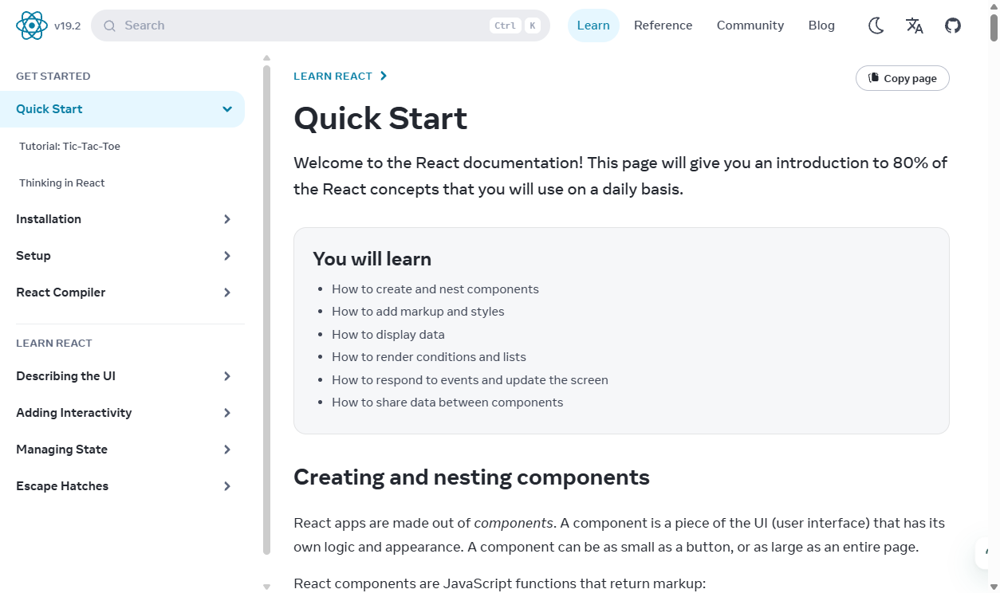
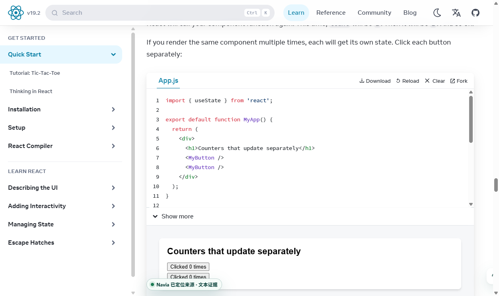
OpenAI Docs / international-doc-openai-docs / degraded
URL: https://platform.openai.com/docs/overview
类别: international_knowledge_blog_doc / international / public_no_login
主内容信号: overview、concept、guide
导图节点: 核心要点 / 验证成功。正在等待 platform.openai.com 响应 / ? location.search if / location.hash / 请稍候
质量指标: grounded=1, topNode=1, noise=0, duplicate=0, overlong=0
反跳: located，markerVisible=true，reason=none
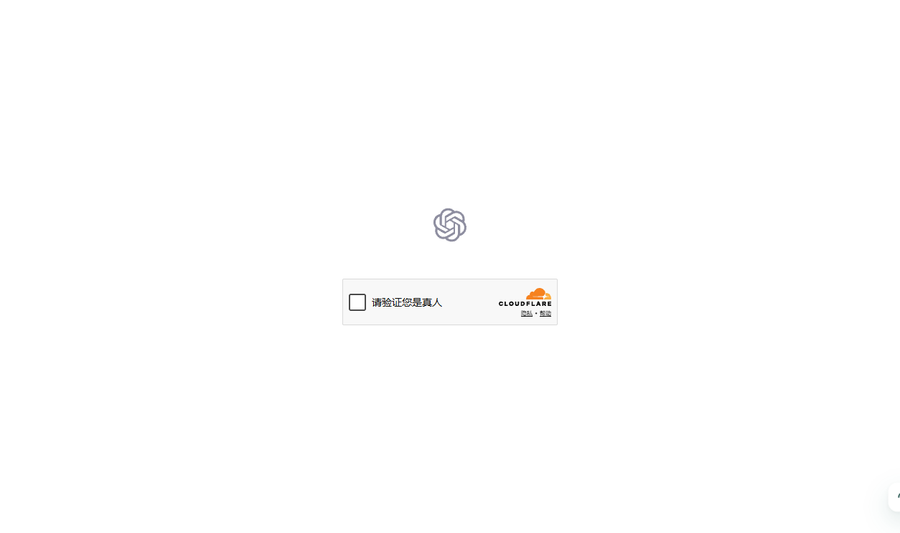
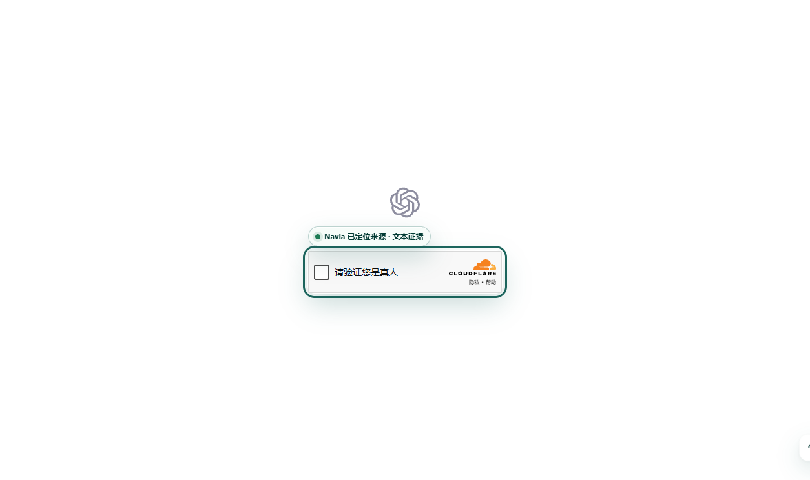
Cloudflare Blog / international-doc-cloudflare-blog / pass
URL: https://blog.cloudflare.com/
类别: international_knowledge_blog_doc / international / public_no_login
主内容信号: blog post title、summary、topic
导图节点: article_body / article_meta / 核心要点 / 流程与操作 / Any agent can now run wrangler / Instead of one-size-fits-all
质量指标: grounded=1, topNode=1, noise=0, duplicate=0, overlong=0
反跳: located，markerVisible=true，reason=none
Google Blog / international-doc-google-ai-blog / pass
URL: https://blog.google/technology/ai/
类别: international_knowledge_blog_doc / international / public_no_login
主内容信号: AI post title、summary、topic
导图节点: article_body / article_meta / 核心要点 / 流程与操作 / 架构与接口 / 4 ways researchers are
质量指标: grounded=1, topNode=1, noise=0, duplicate=0, overlong=0
反跳: located，markerVisible=true，reason=none
GitHub Blog / international-doc-github-blog / pass
URL: https://github.blog/
类别: international_knowledge_blog_doc / international / public_no_login
主内容信号: blog post title、summary、topic
导图节点: article_meta / Arthur Searle June 26, 2026 AI / 来源与追踪 / Latest View all Open Source / 核心要点 / Skip to / Blog Changelog Docs
质量指标: grounded=1, topNode=1, noise=0, duplicate=0, overlong=0
反跳: located，markerVisible=true，reason=none